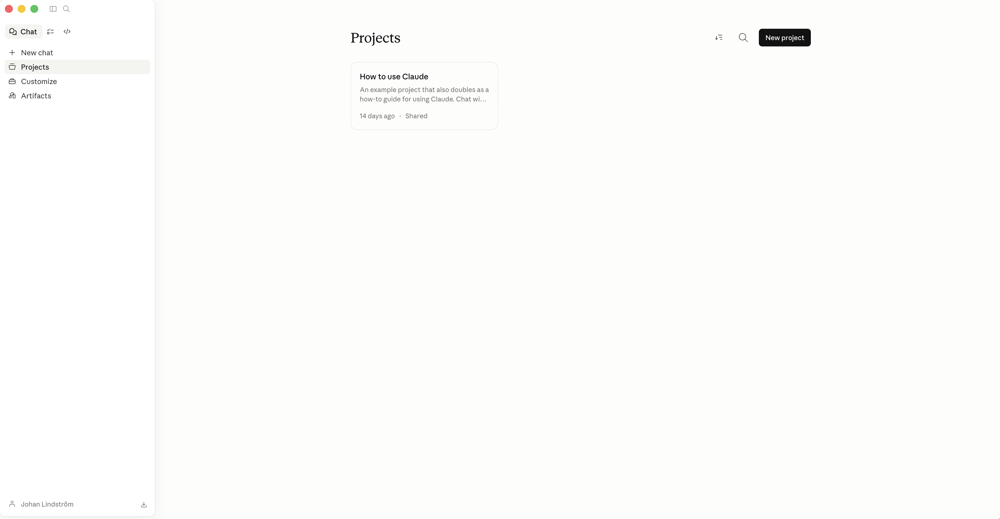

Guide till Claude för lärare och skolledare
En praktisk handbok för dig som undervisar eller leder en skola — från din första prompt till en AI-strategi på hela skolan.
Ladda ner PDF:en gratis →Tre principer som formar guiden
Innan vi kommer till hur, några ord om varför. Vem som helst kan räkna upp Claudes funktioner. Få guider tar ställning till vad verktyget faktiskt är till för — och vad det inte är till för. Den här gör det. Tre principer ligger bakom varje rekommendation på de sidor som följer.
Läraren är experten
Claude är ett verktyg. Du är läraren. Verktyget sätter inte målen för lärandet. Det känner inte dina elever. Det förstår inte de pedagogiska val du har gjort, och varför du gjort dem. Det gör du. Varje output Claude producerar passerar din professionella bedömning innan den når ett klassrum. Det är inte en fin idé — det är arbetsregeln.
Din kunskap, din erfarenhet, din omdömesförmåga — det är det som gör AI-output verkligt användbar. Om du förstår differentiering på djupet blir Claude en kraftmultiplikator. Om du inte gör det kommer ingen AI att fylla luckan. Verktyget förstärker det du redan tar med dig; det ersätter det inte.
Gör grunderna bättre
Frestelsen med ny teknik är alltid att göra nya saker — escape rooms, VR-exkursioner, gamifiera allting. Det mesta är brus. Den verkliga möjligheten är subtilare. Den handlar om att göra det evidensbaserade grundarbetet oftare och mer konsekvent än du gör i dag.
Retrieval practice. Ordförrådsarbete. Differentiering av text. Meningsstöd. Genomarbetade exempel. Formativ återkoppling. Det är de metoder som forskningen pekar på om och om igen, och metoder som lärare alltid sagt att de skulle använda oftare — om de hade tid. Claude ger dig tiden. Det som tidigare krävde nittio minuters förberedelse tar nu fem. Det är inte glamoröst. Det är transformativt i den enda mening som faktiskt spelar roll: eleverna lär sig mer.
Efter snart tre decennier i klassrum och skolledning har jag sett ett stort antal verktyg komma med löften om att förändra skolan. De som blev kvar var de som lät lärare göra mer av det de redan visste fungerade. De som försvann var de som krävde att läraren skulle bli någon annan. Claude är ett av de bästa AI-verktyg jag sett som tydligt hör hemma i den första kategorin — förutsatt att du använder det väl.
— JLInkludera varje elev
I varje klassrum finns elever i marginalen. Andraspråkseleven som behöver nyckelord förundervisade för att över huvud taget komma in i samma text som de andra läser. Eleven med inlärningssvårigheter som behöver samma innehåll på en enklare lässvårighetsnivå. Den avancerade eleven som cruisar runt för att uppgiften inte utmanar. Att möta alla dessa elever, varje lektion, har alltid varit det rätta — och alltid varit för tidskrävande för att göras konsekvent.
Claude sänker tidskostnaden till en nivå där det blir realistiskt. Differentierade texter på fem minuter. Översatta nyckelbegrepp. Stöttade instruktioner. Ljudversioner av skrivna uppgifter. Det handlar inte om att göra mer. Det handlar om att göra det som spelar roll, för de elever som behöver det mest, i den kadens som forskningen rekommenderat i decennier.
Claude hjälper dig att skapa material snabbare. Det ersätter inte det relationella arbete som undervisning är. Låt inte AI:ns effektivitet lura dig att lägga mindre tid med eleverna. Den tid AI sparar är till för dem — inte för mer administration.
Förstå Claudes ekosystem
Claude är inte en enda produkt. De flesta lärare kommer att tillbringa den största delen av tiden på en och samma plats — i chatten — men det är värt att känna till de andra ytorna, eftersom de fyller olika syften och vissa kräver en betald plan.
Fyra ytor, en modellfamilj. Det mesta av ditt arbete sker till en början i Chat.
Chat — det samtalande gränssnittet
Chat är Claude så som de flesta känner till verktyget: du skriver en prompt, får ett svar, itererar. Den körs på claude.ai i webbläsaren, i Claude Desktop-appen på macOS och Windows, samt i mobilapparna. Den kostnadsfria nivån ger dig tillgång till Claude Sonnet, filuppladdning, webbsökning, minne mellan samtal, och möjlighet att skapa nedladdningsbara dokument. Det är här en stor del av lärarna kommer att göra majoriteten av sitt arbete till en början.
Cowork — agentiskt läge i Claude Desktop (betald)
Cowork är nyare, och värt att lära sig eftersom det ändrar vad Claude kan uträtta åt dig på en enda förfrågan. Anthropic beskriver det så här: "Claude Cowork använder samma agentiska arkitektur som driver Claude Code, nu tillgänglig inne i Claude Desktop utan att du behöver öppna terminalen. I stället för att svara på en prompt i taget kan Claude ta sig an komplexa uppgifter i flera steg och utföra dem åt dig." Cowork ligger som en flik inne i Claude Desktop på betalda planer. Du möter verktyget ordentligt i Del 3.
Claude Code — utvecklarverktyget (betald, tekniskt)
Claude Code är ett kommandoradsverktyg för utvecklare och IT-nyfiken personal. Det låter Claude läsa och skriva filer på din dator och köra program. För de flesta lärare är det inte ett verktyg för vardagen, men det är här Claude blir som mest kraftfullt — och det är där skolans tekniker eller utvecklingsledare kan vilja lägga sin tid. Del 3 innehåller en kort översikt så att du vet vad det är.
Mobil — Claude på språng
iOS- och Android-apparna ger dig samma Chat på en mindre skärm. Röstinmatning är särskilt användbar: en lärare jag arbetar med skriver utkasten till veckans föräldrabrev under arbetsresan genom att diktera, och redigerar sedan på laptopen hemma. Mobilen är inte där du bygger; det är där du fångar upp och granskar.
Vad som ingår i respektive plan
| Plan | Pris | Bäst för | Innehåller |
|---|---|---|---|
| Free | 0 kr | Att prova verktyget; lätt privat användning | Chat (Sonnet), webbsökning, minne, filuppladdning, filskapande, mobilappar |
| Pro | ca 200 kr / mån | En lärares dagliga arbetshäst | Allt i Free, plus tillgång till Opus, Cowork, högre användningstak, obegränsat antal Projects, extended thinking |
| Max | ca 1 000 kr+ / mån | Storanvändare, arbetslag | Allt i Pro, plus 5–20× användning, högre outputgränser, tidig tillgång till nya funktioner |
Priserna stämmer per april 2026 och är omräknade från Anthropics dollarpriser. Se claude.ai för aktuella priser. Det är Anthropics planer för enskilda användare; team- och enterpriseplaner skiljer sig.
På planerna för enskilda användare kan dina samtal användas för att träna modellen, som standard. Öppna Inställningar → Privacy och granska alternativet. Om du skriver något om elever — även avidentifierat — gå igenom skolans AI-policy innan du fortsätter, och stäng av modellträningen om du är osäker.
Kom igång

Om du aldrig har öppnat Claude förut, börja här. När du är klar med denna del har du ett konto, du vet hur man skriver en prompt som inte slösar din tid, och du har fem konkreta saker du kan använda redan den här veckan.
Skapa ett konto
Gå till claude.ai och registrera dig. Du kan logga in via Google eller Apple, eller skapa konto med valfri e-postadress. För att avgöra om Claude är ett användbart verktyg för dig kan du inledningsvis prova ett gratis privatkonto — ladda bara inte upp känslig data. Om du bedömer att din skola bör ha Claude-konton åt er finns det flera steg som behöver hanteras och lösas innan ni är igång.
Den kostnadsfria nivån är på riktigt användbar. Du får Claude Sonnet, minne mellan samtal, webbsökning, filuppladdning och filskapande, samt mobilapparna. Det mesta i den här guiden fungerar på den kostnadsfria nivån. Börja där. Uppgradera först när du märker att användningen tar slut mitt i en produktiv session — inte tidigare.
Webb (claude.ai)
Snabbast igång. Ingen installation, inga behörigheter, inget IT-ärende. Öppna webbläsaren, logga in, börja skriva.
Desktopappen (macOS och Windows)
Rekommenderas för daglig användning. Desktopappen körs utanför webbläsaren, vilket innebär att du inte behöver kämpa mot trettio öppna flikar när du vill tänka. Dessutom är det där Cowork finns på betalda planer.
Mobil (iOS och Android)
Installera båda. Röstinmatning är den dolda produktivitetsfunktionen. En tiominuters promenad mellan klassrum räcker för att diktera ett utkast till ett föräldrabrev, en sammanfattning av återkoppling, eller en grov lektionsstruktur. Texten redigerar du senare, på ett ordentligt tangentbord.
Din första prompt — RTF-anatomin
De flesta prompter misslyckas inte för att modellen är dålig, utan för att prompten är för vag. En användbar prompt har tre delar: Roll, Uppgift, Format. Tre bokstäver på engelska: R, T, F.
R — Role (Roll)
Säg åt Claude vem den ska vara. Ju mer specifik rollen är, desto mer jordnära blir outputen. "En lärare i de lägre åldrarna" är svagare än "en erfaren klasslärare i åk 4 som undervisar i en kommunal skola med stor spridning i läsnivåer".
T — Task (Uppgift)
Berätta exakt vad du vill ha gjort. Inte "hjälp mig med en quiz" — det lämnar för mycket åt gissning. I stället: "Gör en tiominuters retrieval practice-quiz på de retoriska grepp som har gåtts igenom de senaste tre lektionerna."
F — Format
Specificera formen på svaret. Antal frågor, blandning av frågetyper, ordantal, rubrikstruktur, om du vill ha ett facit. Formatet är där de flesta första utkast går fel — och där de flesta rättningarna görs. Säg det därför från början.
Sätt ihop de tre delarna och du har en prompt som fungerar på första försöket och blir bättre på det andra. Iteration — d v s att gå tillbaka och förfina utkastet i flera steg — är en del av hantverket: Claudes första output är ett utkast, inte en leverabel. Läs det, säg till Claude vad som ska ändras, kör igen.
Öppna Claude. Skriv en prompt enligt RTF-anatomin — Roll, Uppgift, Format — för en verklig uppgift som ligger på ditt bord just nu. När det första utkastet kommer, be om två ändringar och kör igen. Be om ytterligare en. Lägg märke till vad som förändras mellan utkast ett och tre. Det är din kompetensutveckling i praktiken.
Dålig → Bättre → Bäst
Samma ämne, tre utkast av samma prompt. Varje utkast blir mer specifikt om vad Claude behöver veta. Outputkvaliteten stiger med promptens precision — inte med dess längd.
Förklara vattnets kretslopp.
Förklara vattnets kretslopp för elever i årskurs 6. Gör det lätt att förstå.
Agera som en erfaren NO-lärare för åk 6. Uppgift: Skriv en förklaring av vattnets kretslopp på en sida, anpassad för ett klassrum i åk 6 med bred spridning i kunskapsnivå. Ta med de fyra centrala stegen och ett verkligt exempel för varje steg. Format: - 250–300 ord totalt - Enkelt språk, korta meningar (≤ 15 ord där det går) - En ordlista-ruta med fem nyckeltermer och elevvänliga definitioner - Avsluta med tre retrieval-frågor (två minnes-, en tillämpningsfråga) Nivå: elever som läser på en nivå motsvarande åk 5 till åk 7.
Den bästa prompten är inte längre för syns skull. Varje ord förtjänar sin plats genom att minska det Claude måste gissa.
Fem snabba vinster den här veckan
Försök inte använda Claude till allt på en gång. Bli bra på en uppgift, få in den i din rutin, lägg sedan till nästa.
1 · Differentiera en läsförståelsetext på tre nivåer
Klistra in en text du planerar att använda. Be Claude producera tre versioner av den — på en läsnivå två år under, i nivå med, och två år över åldersgruppen — med samma grundidéer och med gemensamt ordförråd intakt. Hela arbetet tar fem minuter i stället för fyrtio, och varje elev i rummet läser om samma ämne samma dag.
Extra exempel: en SO-lärare för åk 7 jag arbetar med använder det här varje vecka på DN- och Aftonbladet-artiklar om aktuella händelser. En artikel blir tre versioner för tre läsgrupper inom femton minuter, och samhällsfrågor kommer äntligen in i klassrummet i rätt tid i stället för en termin för sent.
2 · Bygg en retrieval practice-quiz
Retrieval practice fungerar. Det som hindrar de flesta lärare från att köra det varje lektion är tidskostnaden för att ta fram nya frågor. Claude tar bort den kostnaden. Ge ämnet, årskursen, blandningen av frågetyper och antalet frågor. Be om ett facit i slutet. Du har ett användbart utkast inom två minuter.
Extra exempel: en ämnesansvarig jag coachat använder detta för att ta fram en femfrågors lågt insatsande quiz för de första fem minuterna av varje lektion i hela arbetslaget. Quizzen är konsekventa, bygger på tidigare stoff, och tar henne tio minuter i veckan att ta fram för ett helt team.
3 · Skriv utkast till ett föräldrabrev
Du vet vad du vill säga. Det som tar tid är att skriva det väl, professionellt, och utan att falla tillbaka i de sex hackiga meningar du har använt förr. Ge Claude kontexten — vad som hände, vad du vill att föräldern ska veta, vilken ton du vill träffa — och låt verktyget ta fram ett första utkast. Redigera. Skicka.
Extra exempel: använd Claude för att skriva utkast till ett känsligt brev om en elevs uppförande, och be sedan om samma meddelande i två alternativa toner (fastare, varmare). De tre versionerna ger dig kalibrering innan du bestämmer dig för den du skickar.
4 · Sammanfatta ett långt policydokument
Lärare drunknar i policydokument de inte hinner läsa ordentligt. Ladda upp PDF:en och be Claude om de tre saker du faktiskt behöver veta, de delar som påverkar dig direkt, och eventuella deadlines som gömmer sig i texten.
Extra exempel: när kommunen släpper en uppdaterad bedömningspolicy, ladda upp den nya versionen och den tidigare versionen. Be Claude om en sida-vid-sida-jämförelse av vad som har ändrats. Du har nu en överblick dina kollegor inte har.
5 · Skapa en lektionsstart
De första fem minuterna av en lektion spelar större roll än de flesta av de femtio följande. Be Claude om tre alternativ till lektionsstart i olika format — en ordförrådsuppvärmning, en meningskompletteringsuppgift och en fråga för think-pair-share — och välj det som passar din klass.
Extra exempel: en klasslärare jag arbetar med genererar sina lektionsstarter en termin i taget, i batch. En kväll producerar tolv veckors starter över hennes ämnesrotation. Hon redigerar och arkiverar dem sedan, och frigör sina söndagskvällar för resten av terminen.
Välj en av de fem. Gör den på en verklig lektion den här veckan. De andra fyra finns kvar nästa vecka. Du utvecklar din kunskapsnivå mer om du upprepar samma uppgift flera gånger jämfört med om du gör många olika uppgifter samtidigt.
Del 1 — Innan du går vidare
- Jag har skapat ett Claude-konto och loggat in på claude.ai
- Jag vet vilken yta (Chat, Cowork, Code, Mobil) som är vilken, och vilka som kräver en betald plan
- Jag har skrivit minst tre prompter enligt RTF-anatomin — Roll, Uppgift, Format
- Jag har itererat på minst en prompt — förbättrat den genom två rundor av återkoppling — för en verklig uppgift
- Jag har genomfört minst en av de fem snabba vinsterna för en lektion eller uppgift den här veckan
- Jag har bestämt vilka kategorier av data som är okej att dela med Claude, och vilka som inte är det
Arbeta smartare

När du märker att du återvänder till Claude för samma typ av uppgift vecka efter vecka, är det dags att sluta börja från noll. Den här delen visar hur du gör Claude till en bestående assistent — en som redan känner ditt ämne, din skola, och hur du vill att texten ska låta.
Projects — din bestående lärarassistent
Projects är en arbetsyta inne i Claude. Du skapar en, ger den ett namn, laddar upp referensfiler och skriver en uppsättning egna instruktioner. Varje samtal du startar inne i det projektet bygger på de filerna och följer de instruktionerna — utan att du behöver klistra in dem igen.
Det är här Claude slutar vara allmänt hjälpsam och börjar bli din kompetenta assistent. Samma prompt som producerade ett kompetent-men-blekt arbetsblad utanför ett Projekt producerar ett arbetsblad som passar dina elever när det körs inne i en. Skillnaden handlar inte om att Claude arbetar hårdare; den handlar om att Claude arbetar med mer kontext.

Vad du ska ladda upp till ditt första Projekt
Välj ditt huvudsakliga undervisningsområde — det ämne eller den årskurs där du lägger mest tid. Skapa ett Projekt för det. Ladda upp fem saker som tillsammans beskriver din arbetssituation:
- Kursplan eller ämnesplan för ämnet och årskursen
- Din grovplanering eller terminsplan, om du har en
- Skolans språkliga stilguide eller kommunikationsguide, om en sådan finns
- En bedömningsmatris du ofta använder
- Tre avidentifierade elevarbeten på olika prestationsnivåer
Innan du laddar upp något till Claude, bestäm vilka kategorier av data som är okej att dela — och vilka som inte är det.
Instruktionerna som gör skillnaden
Under Projektets inställningar lägger du till en egen instruktion som beskriver vem Claude är för dig. Något i stil med:
"Du är en erfaren svensklärare i åk 8 i en kommunal skola med bred spridning i kunskapsnivå. Outputen ska vara klassrumsklar, följa den uppladdade stilguiden och aldrig producera mer än jag har bett om. Om en uppgift rör elevdata, be mig bekräfta att datan har avidentifierats innan du fortsätter. Använd svensk språkriktighet enligt Svenska skrivregler."
Lägg tjugo minuter på att sätta upp ditt första Projekt. Ladda upp tre dokument. Skriv instruktionerna. Kör sedan gårdagens sämsta prompt inne i Projectet och lägg märke till skillnaden. De tjugo minuterna kan vara den största tidsbesparingen som du gör med AI under hela läsåret.
Artifacts — gör samtal till nedladdningsbara dokument
När du ber Claude skapa något — ett arbetsblad, en matris, en quiz, ett brev hem, en ordlista — kan verktyget producera en nedladdningsbar fil direkt i samtalet. Dessa dyker upp bredvid chatten som artifacts. Du laddar ner dem, redigerar dem och itererar, utan att lämna webbläsaren.
Vanliga outputformat: Word-dokument, PDF, PowerPoint-presentationer, Excel-kalkyler med formler, ren text, HTML, Markdown. För det mesta klassrumsmaterialet är det Word eller PDF du vill ha.
Filer — låt Claude läsa din kursplan
Claude hanterar långa dokument exceptionellt bra. Du kan ladda upp PDF:er, Word-dokument, kalkyler, bilder och presentationer. Filuppladdning är där Claude förtjänar sin mest underskattade plats: att läsa de dokument du aldrig själv hinner läsa.
Tre högvärdesanvändningar för lärare och skolledare:
- Sammanfatta ett långt policydokument. Ladda upp det, be om de tre saker som faktiskt påverkar dig, alla deadlines som gömmer sig i texten, och eventuella förändringar från en tidigare version som du också laddar upp.
- Mappa en befintlig arbetsområdesplanering mot styrdokument. Ladda upp din arbetsområdesplan och kurs- eller ämnesplanen, och be Claude identifiera luckor, överlapp och möjligheter.
- Analysera avidentifierade elevarbeten för återkopplingsmönster. Ladda upp åtta till tio anonymiserade svar och be Claude identifiera återkommande styrkor och återkommande missuppfattningar, och sedan föreslå de tre lärarhandlingar som ger mest avkastning under nästa lektion.
Innan du laddar upp något till Claude, bestäm vilka kategorier av data som är okej att dela — och vilka som inte är det. Offentliga styrdokument, policy-PDF:er, dina egna lektionsanteckningar och presentationer är vanligen okej. Elevnamn, betyg, ordningsomdömen, hälsoinformation, vårdnadshavares kontaktuppgifter, allt som identifierar en ung människa — aldrig. Avidentifiera allt. Byt ut namn mot roller ("Elev A", "Elev B"). Generalisera datum och platser. Om du är osäker på om ett dokument är säkert att ladda upp, behandla det som att det inte är det, och fråga skolans dataskyddsombud innan du fortsätter.
Styles & Memory — få Claude att låta som dig
Styles
Styles är röst-presets. Du sparar en som heter "Föräldrakommunikation — varmt, tydligt, professionellt, ingen jargong" och en annan som heter "Lärarkonferens-brief — koncist, handlingsorienterat, med punktlistor". När du startar en relevant uppgift väljer du Stylen ur en rullista, och outputen kommer fram redan i den röst du vill ha. De flesta lärare landar i tre eller fyra Styles. Det räcker vanligen för att täcka åttio procent av skrivuppgifterna.
Memory
Claude kan komma ihåg saker om dig mellan samtal — din roll, årskursen du undervisar i, din skolkontext, hur du vill att outputen ska formateras. Du aktiverar funktionen en gång, och den jobbar sedan i bakgrunden. Öppna Inställningar, hitta Memory-avsnittet och slå på det. Berätta om dig själv i vanliga meningar i de första samtalen. Du kan granska varje minne som sparats — och radera vilket som helst — i Inställningar när som helst.

Project är den minsta enhet av ackumulerat värde i Claude. Sätt upp den en gång; dra nytta av den i varje samtal.
Fem arbetsflöden för klassrummet som ackumuleras
Enskilda prompter ger enskilda outputs. Den verkliga hävstången ligger i arbetsflöden — promptmönster du återanvänder vecka efter vecka, inbäddade inne i ett Projekt, där filerna och instruktionerna gör halva arbetet åt dig.
1 · Veckans lektionsplanering utifrån lärandemål
Utgå från veckans mål, din årskurs och den tid du har. Be Claude om ett lektionsskelett: en fem-minutersstart, en huvuduppgift med differentiering på tre nivåer, en exit ticket. Fem minuters arbete ersätter det som tidigare var ett fyrtio-minuters planeringspass.
2 · Återkopplingsmönster från avidentifierade elevarbeten
Ladda upp åtta till tio avidentifierade svar på samma uppgift. Be Claude identifiera de tre återkommande styrkorna, de tre återkommande missuppfattningarna, och den enskilt mest avkastande saken att undervisa om härnäst. Det som kommer tillbaka är vanligen det du själv skulle ha kommit fram till, men snabbare och med bekvämligheten av ett andra par ögon.
3 · Differentieringsgenerator
Vilken undervisningsresurs som helst — en läsförståelsetext, ett arbetsblad, en instruktionstext — kan differentieras i tre riktningar: förenklad, utvidgad och med ordförrådsstöttning för andraspråkselever. Sätt upp det en gång inne i ditt Projekt, så blir prompten ett återkommande mönster.
4 · För skolledare — förberedelse inför APT eller ledningsgruppsmöte
Ladda upp dagordningen, eventuellt inläsningsmaterial och senaste mötesanteckningarna. Be Claude producera en enkelsidig mötesbrief med de beslut som ska fattas, tidsdisposition per punkt, frågor att förvänta sig från personalen, och förslag på uppföljningsåtgärder.
5 · För skolledare — utkast till policydokument
Claude producerar ett första utkast av en policy från en brief. Du bidrar med kontexten — problemet, begränsningarna, intressenterna, det juridiska ramverket — och ber om ett utkast. Redigera, iterera, cirkulera. Ett första utkast är alltid en utgångspunkt för mänskligt omdöme; det är aldrig det slutgiltiga.
De lärare jag arbetar med som får ut mest av Claude är inte de som använder verktyget oftast. Det är de som har byggt in tre eller fyra arbetsflöden i sin veckorutin och sedan slutat lägga till nya. Djup slår bredd varje gång. Välj en eller två av de fem ovan, kör den/dem tills du är bekväm innan du lägger till ytterligare en.
— JLSkala upp & led
Del 3 är för dig som vill göra mer än att spara personlig tid. Det är för dig som bygger ett system — för ditt klassrum, ditt arbetslag, din skola. Verktygen och mönstren här ändrar vad en enskild pedagog kan ta sig an.
Cowork — agentiska arbetsflöden utan terminalen
Cowork är en flik inne i Claude Desktop på betalda planer. Anthropics egen beskrivning är värd att citera: "Claude Cowork använder samma agentiska arkitektur som driver Claude Code, nu tillgänglig inne i Claude Desktop utan att du behöver öppna terminalen. I stället för att svara på en prompt i taget kan Claude ta sig an komplexa uppgifter i flera steg och utföra dem åt dig."
Den praktiska skillnaden: i Chat kör du en prompt, väntar på svaret, avgör sedan nästa steg. I Cowork beskriver du en uppgift i flera steg och Claude arbetar sig igenom den, använder verktyg under vägen, tills uppgiften är klar. Du är kvar i loopen — du kan se på, avbryta och omdirigera — men du gör inte den manuella orkestreringen.

När du ska greppa efter Cowork i stället för Chat
Cowork förtjänar sin plats på uppgifter som annars skulle kräva att du skriver tre, fem eller tio kedjade prompter själv. T ex:
- "Planera ett arbetsområde om fotosyntes som sträcker sig över fem veckor. Inkludera lärandemål per vecka, en lektionsstruktur per vecka, en formativ bedömning vecka tre, en summativ projektbeskrivning för vecka fem, och en enkelsidig översikt riktad till vårdnadshavare."
- "Skriv utkast till den här månadens veckobrev till vårdnadshavare. Hämta händelserna från den bifogade skolkalendern, lägg till en kort text från rektor, en hyllning av tre elevers prestationer, och en påminnelse om den kommande provveckan. Formatera som en utskriftsbar A4-sida."
- "Producera ett konsekvent set av differentierade resurser för arbetsområdet Industriella revolutionen i åk 9: en förenklad läsförståelsetext, en på nivå, en utvidgad, ett ordförrådsblad med elevvänliga definitioner, och en retrieval-quiz, för vart och ett av de fyra lektionsämnena."
Var och en av dessa skulle ha varit en förmiddag med kedjade prompter i Chat. I Cowork är var och en en enda förfrågan.
Cowork är mer autonomt än Chat. Det tar flera steg i följd utan att stämma av emellan varje. Den hastigheten är själva poängen — men den innebär också att fel kan propagera längre innan du fångar dem. Läs allt som produceras innan du skickar det någonstans eller agerar på det. Behandla varje Cowork-output som ett utkast från en junior kollega som arbetar mycket snabbt och ibland har självsäkert fel.
Custom Skills — dina återanvändbara undervisningsagenter
Skills är små, namngivna instruktioner som Claude laddar in när den känner igen en relevant uppgift. Du bygger en, ger den ett namn, och från och med då triggas Skillen automatiskt i varje samtal där uppgiften passar. Det är ett sätt att lära Claude de specifika mönster du använder, så att du inte behöver förklara dem varje gång.
Tänk dig en Skill som heter differentiera-tre-nivåer. Du skriver den en gång. Den beskriver exakt hur du vill att vilken text som helst ska skrivas om på en enklare läsnivå, på nivå, och i en utvidgad version, med gemensamt fetad nyckelvokabulär och en ordlista. Från och med då, varje gång du klistrar in en text och ber om "differentiera den här", tillämpar Claude Skillen exakt.
En annan kandidat: föräldrabrev-mall. Skolans ton, din föredragna struktur, den vanliga avslutningen. Skriven en gång, anropad när den behövs.
Tregångsregeln. Om du märker att du förklarar samma mönster för Claude mer än tre gånger är det dags att göra det till en Skill.
Du behöver inte bygga varje Skill från noll. Det finns en aktiv community som öppet delar högkvalitativa utbildnings-Skills på GitHub — för differentiering, retrieval practice, återkoppling, föräldrakommunikation och mycket annat. Ladda ner de som passar ditt arbete och installera dem i din egen Claude. Gareth Mannings repo claude-education-skills är en bra utgångspunkt; en sökning på GitHub efter claude skills ger många fler.
Claude Code — en inblick
För de flesta lärare är Claude Code inte ett verktyg för vardagen. Men det är värt att veta att det finns, eftersom det är där Claude blir som mest kraftfullt, och där skolans IT-personal eller utvecklingsledare kan vilja lägga sin tid.
Claude Code är ett kommandoradsverktyg som körs på macOS, Windows och Linux. Claude kan läsa och skriva filer på din dator, köra program, och genomföra planer i flera steg tvärs över filsystemet. Tre exempel på vad det låser upp:
- Massbyte av namn och omstrukturering av en mapp med hundratals klassrumsresurser enligt en ny namnstandard, på minuter i stället för en eftermiddag
- Bygga en liten webbplats för ett klassprojekt, endast utifrån beskrivningar i vanligt språk om vad webbplatsen ska göra
- Automatisera produktionen av ett helt års differentierade arbetsblad utifrån ett styrdokument och en bedömningsmatris
Om din skola har en tekniknyfiken lärare, en skoladministratör med en teknisk ådra, eller en IT-ansvarig — peka ut Claude Code för dem.
Införande på hela skolan — fortbildning, policy, styrning
För skolledare som överväger Claude bortom personlig användning spelar tre saker större roll än allt annat: hur ni fortbildar, vad ni kodifierar, och vem som bär ansvaret.
Fortbildning
De flesta skolor gör som standard en engångsworkshop: en besökande expert, två timmar på en studiedag, en presentation som cirkuleras efteråt. Två veckor senare har ingenting förändrats i klassrummen. Det mönstret fungerar inte bättre för AI än det fungerar för någon annan form av kompetensutveckling.
Det som fungerar är en liten arbetsgrupp som träffas regelbundet — varannan vecka under en termin räcker — där personalen tar med sig verkliga uppgifter, lär sig tillsammans, och dokumenterar de mönster som fungerar i skolans specifika kontext. Gruppen leds av en lärare eller skolledare som är ett steg före, inte tre.
Policy
Varje skola som använder AI behöver en skriven AI-policy. Inte visionär, inte abstrakt, utan tillräckligt specifik för att en medarbetare i en verklig situation ska kunna slå upp vad hen ska göra.
Styrning
Någon äger AI på skolan. Det kan vara en enskild skolledare eller ett litet team, men en tydlig ägare är icke-förhandlingsbar. Utan en sådan splittras ansvar och besluten blir oklara.
Hur "bra" ser ut under de första 90 dagarna
Dag 0–30: Utse ägaren. Kör en bas-undersökning bland personalen om nuvarande AI-användning. Ta fram version 0.1 av policyn. Identifiera tre lärare som är villiga att vara tidiga användare.
Dag 31–60: De tidiga användarna kör pilot-arbetsflöden. Arbetsgruppen träffas varannan vecka. Policyn går till version 0.2 baserat på verkliga lärdomar från piloten.
Dag 61–90: Arbetsgruppen öppnas för all intresserad personal. Policyn fastställs på huvudmannanivå. Skolan dokumenterar sina tre första skolspecifika Skills. Plan för termin-för-termin-granskning etableras.
Jag har rådgivit skolor över hela Sverige och Norden genom AI-införandets tidiga år. De skolor som gör det bra delar en sak gemensamt, och det är inte att de köpt det verktyg som blänker mest just nu. Det är att någon i skolledningen gjort AI till en del av sin befattningsbeskrivning — uttryckligen, på papper — och skyddat tid för det. Varje skola som kämpat har haft AI som "allas ansvar", d v s ingens.
— JLEtik — när du INTE ska använda Claude
Varje verktyg talar om för dig vad det är till för. Få talar om vad det inte är till för. Det här avsnittet är det senare.
Hallucinationer
Claude kan producera innehåll som låter helt rimligt och är faktamässigt fel. Verktyget är som mest benäget att göra så på smala, tekniska, mycket färska eller numeriskt precisa ämnen. Du kan ditt ämne. Använd den expertisen för att kontrollera allt innan det når en elev.
Ge aldrig en elev en AI-genererad resurs du inte själv har läst noggrant. Flyt i språket gör fel svårare att upptäcka, inte lättare. Ett faktafel formulerat med självsäkerhet i en klassrumsresurs undergräver både lektionen och din trovärdighet på samma gång.
Datadisciplin
Regeln från Del 2 återkommer här, på skolnivå: bestäm i förväg vilka kategorier av data som är okej att dela med Claude och vilka som inte är det. Tillämpa samma disciplin på att ge Claude tillgång till mappar och kopplade tjänster. Cowork, Claude Code och MCP-integrationer kan nå ditt filsystem, din e-post, din molnlagring. Ge bara tillgång till mappar och verktyg som innehåller data du skulle vara bekväm med att dela i en chatt. Behandla mapptillgång så som du skulle behandla att lämna ut nyckeln till ett arkivskåp: bara när det är nödvändigt, bara till den specifika lådan, och aldrig hela skåpet som standard.
Att automatisera fel saker
Den sämsta användningen av AI i skolan är inte fusk. Det är lärare som använder AI för att producera arbete som inte borde existera, till elever som använder AI för att göra klart det, till lärare som använder AI för att rätta det. Innan du ber Claude hjälpa till, fråga: är den här uppgiften värd att göras över huvud taget? Är det ett arbete jag borde göra själv?
Bildningsfrågan
Inte varje uppgift ska outsourcas — även när det skulle gå. Att skriva, tänka, planera, reflektera är inte bara uppgifter. Det är så lärare växer som professionella. Om AI gör allt ditt tänkande slutar du utvecklas. Använd AI för det mekaniska. Behåll det meningsbärande.
Europeiska regler styr
Eftersom Sverige är ett EU-land gäller två regelverk för hur du använder Claude i skolan: GDPR och EU:s AI-förordning. Det här kapitlet är en praktisk grundintroduktion — inte juridisk rådgivning.
GDPR-grunder för skolan
Rättslig grund
Skolor stödjer sig vanligen på myndighetsutövning, uppgift av allmänt intresse eller berättigat intresse som rättslig grund för behandling av elevdata. Förutsätt inte att du har elevens eller vårdnadshavarens samtycke om du inte aktivt inhämtat det för ett specifikt, tydligt beskrivet ändamål. "Vi använder AI på skolan" är inte samtycke.
Uppgiftsminimering
Dela bara det du behöver dela. Om du ber Claude analysera ett stycke ur en elevtext, klistra in det stycket — inte hela uppsatsen, och definitivt inte uppsatsen med elevens namn.
Elevdata är personuppgifter
Ja, även när du tror att den är anonymiserad. Äkta anonymisering är svårare än det ser ut. Pseudonymisering (d v s att ersätta namn med koder som "Elev A") är mer realistisk och är det säkrare standardvalet i klassrumsbruk.
Registerförteckning (artikel 30)
Om din skola använder Claude rutinmässigt bör skolans registerförteckning spegla det. När du inför en ny rutinmässig användning av Claude, berätta det för dataskyddsombudet.
EU:s AI-förordning — vad den betyder för skolan
EU:s AI-förordning trädde i kraft 2024 och fasas in under 2026 och framåt. Den klassificerar AI-användning efter risknivå och kopplar skyldigheter till varje nivå. Skola och utbildning omfattas uttryckligen, och flera vanliga användningar i skolan klassas som högrisk.
Riskklassificeringen avgör skyldigheterna. De flesta lärares dagliga användning ligger i de två nedre nivåerna.
Minimal risk: lektionsplanering, utkast till kommunikation, sammanfattning av egna anteckningar. Vanlig dataskyddsdisciplin gäller.
Begränsad risk: chatbottar riktade till elever, eller Claude-drivna verktyg som interagerar med elever direkt. Transparenskrav gäller: eleverna måste få veta att de interagerar med en AI.
Hög risk: AI som används för att bedöma elever på sätt som avgör tillgången till utbildning — antagning, betygssättning, bedömning av uppförande. Stränga skyldigheter gäller. Involvera skolans dataskyddsombud och juridisk rådgivning innan du sätter något i drift här.
Oacceptabel risk: förbjudet rakt av. Social poängsättning, känsloigenkänningssystem som används för bedömning, system som utnyttjar sårbarheter hos barn.
En praktisk efterlevnadschecklista
Om du kan svara ja på var och en av dessa punkter har du en försvarbar utgångspunkt — inte en färdig efterlevnadsposition.
- Vi har en skriven AI-policy som personalen har läst och kvitterat
- Policyn utser en enskild ägare med ansvar för AI-användningen på skolan
- Vi har bestämt vilka kategorier av data som är okej att dela med Claude — och vilka som inte är det
- Personalen vet hur man avidentifierar elevdata före uppladdning
- Vi har gått igenom Claudes integritetsinställningar, inklusive möjligheten att avstå från modellträning
- Vår registerförteckning (artikel 30) speglar all rutinmässig användning av Claude
- Vi har klassificerat våra avsedda användningar mot risknivåerna i EU:s AI-förordning
- Vi har involverat vårt dataskyddsombud i eventuella högrisk-användningar
- Vi har en process där personalen kan lyfta farhågor om AI-användning utan negativa följder
- Vi granskar policyn minst en gång per termin
Jag är inte jurist. Den här guiden ger dig en utgångspunkt, inte juridisk rådgivning. Se till att checklistan harmonierar med din egen organisations tolkning av GDPR och EU:s AI-förordning, och rådgör med ert dataskyddsombud eller juridisk rådgivning för bindande beslut. Regleringen på området utvecklas — bygg in en granskningscykel i skolans kalender och behandla AI-efterlevnad som en pågående praktik, inte ett engångsprojekt.
Promptbibliotek
Tjugofem prompter du kan kopiera, klistra in och anpassa. Klicka på en rubrik för att expandera. Klicka Kopiera för att lägga prompten på din urklipp.
För lärare
Agera som en erfaren lärare i [ämne] för [årskurs] i ett klassrum med bred spridning i kunskapsnivå. Uppgift: Nedanför den här prompten finns en läsförståelsetext. Producera tre versioner av den — på läsnivåer motsvarande [ålder − 2 år], [åldersnivå] och [ålder + 2 år] — med grundidéerna bevarade och de sex fetade nyckeltermerna identiska i alla tre versionerna. Format: Märk varje version tydligt. 150–250 ord per version. Enkelt språk i den förenklade; utvidgat ordförråd i den avancerade. [klistra in läsförståelsetexten här]
Agera som en erfaren lärare i [ämne] för [årskurs]. Uppgift: Skapa en [10]-minuters retrieval practice-quiz om [ämnesområde], som täcker stoffet från de senaste [tre] lektionerna. Format: - [5] flervalsfrågor (fyra alternativ vardera) - [5] kortsvarsfrågor - Blandad svårighetsgrad - Facit i slutet med korta förklaringar för varje svar
Agera som en erfaren lärare i [ämne] för [årskurs]. Uppgift: Nedan finns [8] avidentifierade elevsvar på samma uppgift. Identifiera (1) de tre återkommande styrkorna, (2) de tre återkommande missuppfattningarna, och (3) den enskilt mest avkastande saken jag bör undervisa om härnäst. Kommentera inte enskilda elever — aggregera endast. Format: Tre numrerade avsnitt, punktlistor under varje. [klistra in de avidentifierade svaren]
Agera som en erfaren lärare i [ämne]. Uppgift: Ta fram en fyrnivås bedömningsmatris för en [uppgiftstyp, t ex argumenterande text] i [årskurs]. Bedöm [kriterium 1], [kriterium 2], [kriterium 3] och [kriterium 4]. Format: - Enkelsidig tabell - Fyra nivåer: På väg, Utvecklande, Säker, Utvidgande - En deskriptor per kriterium per nivå, i ett språk som eleven förstår - Avsluta med ett exempel på hur "Säker"-nivå ser ut i praktiken
Skriv ett kort brev till vårdnadshavare för elever i [årskurs] om [ämne]. Ton: professionell, varm, tydlig — ingen jargong. Utgå från att vårdnadshavaren har ont om tid. Format: två korta stycken plus en avslutande mening. Inkludera en mening som lugnar vårdnadshavare om det stöd som finns för elever som behöver det. Avsluta med: "Med vänliga hälsningar, [mitt namn]". Kontext: [1–3 meningar om vad som har hänt eller vad vårdnadshavare behöver veta]
Skriv om läsförståelsetexten nedan för elever med en läsnivå motsvarande [ålder] år. Bevara varje faktapåstående. Korta meningarna (≤ 15 ord där det går). Byt ut lågfrekvent ordförråd mot mer tillgängliga alternativ, utom de fetade nyckeltermerna, som ska stå kvar. [klistra in originaltexten]
Ta fram en ordförrådslista för [ämnesområde] för elever i [årskurs]. Inkludera [10] nyckeltermer. För varje term: en barnvänlig definition, en mening som visar termen i sitt sammanhang, och en fråga som kontrollerar förståelsen. Format: tabell med fyra kolumner — Term · Definition · Exempel · Kontrollfråga.
Agera som en erfaren lärare i [ämne]. Uppgift: Ta fram tre exit ticket-alternativ för dagens lektion om [ämnesområde]. Varje alternativ ska ta högst 3 minuter att göra. Format: (1) en tvåfrågors minneskontroll, (2) en förklaringsfråga i en mening, (3) en reflektionsfråga: "Vad är en sak du fortfarande är osäker på?". Märk varje tydligt.
Agera som en erfaren lärare i [ämne] för [årskurs]. Uppgift: Ta fram en komplett 60-minuters lektionsplan om [ämnesområde]. Lektionens mål: [mål]. Förkunskaper: eleverna har gått igenom [X, Y, Z]. Format: - 5-minuters start (retrieval eller engagemang) - 10-minuters lärarförklaring med ett genomarbetat exempel - 25-minuters självständigt eller parvis arbete, differentierat på tre nivåer - 10-minuters återgång/kontroll av förståelse - 5-minuters exit ticket - Inkludera en Se upp: en trolig missuppfattning och hur den hanteras - Inkludera en Utmaning: en extensionsuppgift för avancerade elever
Ta fram tre debattsatser som passar elever i [årskurs] om ämnet [ämnesområde]. För varje sats: - En mening som formulerar själva satsen - Tre nyckelpoänger för "för"-sidan - Tre nyckelpoänger för "mot"-sidan - Ett motargument som varje sida bör vara beredd att bemöta - Ett stycke evidens eller exempel som varje sida kan använda Nivå: åldersanpassat, inte kränkande, tillräckligt med substans för att bära en 20-minuters diskussion.
För skolledare
Nedan finns dagordningen och eventuellt inläsningsmaterial för morgondagens personalmöte. Ta fram en enkelsidig brief till mig (ordförande) som täcker: 1. De viktigaste besluten som ska fattas, i prioritetsordning 2. Tidsram jag bör rikta in mig på per punkt 3. Två eller tre frågor jag bör förvänta mig från personalen per punkt, och ett kort svar på varje 4. Förslag på uppföljningsåtgärder beroende på hur varje beslut landar [klistra in dagordning och inläsningsmaterial]
Ta fram ett första utkast till en policy på skolan om [ämne]. Kontext: [2–3 meningar om problemet policyn adresserar, intressenterna, och eventuellt regulatoriskt ramverk] Format: - Syfte (ett stycke) - Omfattning (vem och vad policyn gäller för) - Grundprinciper (3–5 punkter) - Konkreta rutiner (numrerade steg) - Revisionscykel (hur ofta, av vem) - Högst två A4-sidor Röst: tydlig, tillgänglig för icke-specialister, undviker jargong.
Skriv utkast till den här månadens föräldrabrev för [skolans namn]. Använd den bifogade kalendern, rektors utkast till hälsning, och listan över elevprestationer. Format: - En utskriftsbar A4-sida - Varm, inte korporativ, ton - Avsnitt: Rektors hälsning, Månadens höjdpunkter, Viktiga datum, Hyllningar - Håll kalenderhändelserna faktabaserade; väv in rektors hälsning i Höjdpunkter [bifoga källmaterial]
Nedan finns mina anteckningar från [n] lektionsobservationer den här terminen. Identifiera de tre återkommande styrkorna över hela arbetslaget och de tre återkommande utvecklingsområdena. För varje utvecklingsområde, föreslå ett konkret coachande samtal en arbetslagsledare kan inleda med. Format: två numrerade avsnitt. Aggregera endast — referera inte till enskilda lärare. [klistra in observationsanteckningarna]
Ta fram ett första utkast till AI-användningspolicy för en [typ av skola] i [kommun]. Policyn ska adressera: 1. Vilka kategorier av elevdata som får delas med AI-verktyg, och vilka som inte får det 2. Personalens användning av AI för planering, kommunikation och bedömning 3. Elevernas användning av AI i läxor och bedömningsuppgifter 4. Vad personalen ska göra när en elev misstänks ha lämnat in AI-genererat arbete 5. Revisionscykel och ägarskap Format: högst två A4-sidor. Vanligt språk. Skriven för personal, inte jurister.
Designa en 90-minuters kompetensutvecklingssession om [ämne], som passar en blandad grupp av lärare och arbetslagsledare. Sessionen ska vara praktisk — personalen går därifrån med något de kan använda redan på måndagen. Format: - 15 minuters ramsättning (varför detta ämne, varför nu) - 30 minuters input med ett genomarbetat exempel - 30 minuters strukturerad aktivitet i smågrupper - 15 minuters återrapportering och handlingsplan Inkludera: diskussionsfrågor, ett stycke förläsning (länk eller kort text), och den enskilda konkreta handling varje medarbetare ombeds förbinda sig till inför nästa möte.
Skriv utkast till en första-respons-kommunikation till vårdnadshavare gällande [händelse]. Utgå från att (1) skolans prioritering är elevernas trygghet, (2) transparens är avgörande, och (3) vi har ännu inte alla fakta. Format: ett e-brev. Tydligt, lugnt, sakligt. Undvik spekulation. Berätta vad vi vet, vad vi gör, och när vårdnadshavare får höra mer. Inget juristspråk. Avsluta med: "Med omsorg, [rektors namn]".
Ta fram den här veckans läxor för [ämne] i [årskurs]. Total tid eleverna ska lägga: [n] minuter. Ämnesområde: [ämnesområde] från [lektionsnummer]. Format: - 3–5 frågor eller uppgifter av varierande svårighetsgrad - Minst en retrieval-fråga från tidigare stoff - Minst en tillämpningsuppgift som bygger vidare på dagens lärande - Tydliga instruktioner en vårdnadshavare kan läsa och förstå - Facit / framgångskriterier i ett separat avsnitt
Universella
Jag vill att du kommer ihåg några saker om mig, så att du kan vara mer användbar i framtida samtal: Jag är [roll, t ex svensklärare i åk 8] på en [typ av skola] i [kommun]. Jag undervisar [n] klasser med runt [n] elever. Min undervisningskontext är [bred spridning i kunskapsnivå / nivågrupperad / specifik kursplan]. Jag värderar [evidensbaserad praktik / kreativitet / specifik pedagogik]. Mina önskemål om output: - Håll det kort om jag inte ber om djup - Använd svensk språkriktighet enligt Svenska skrivregler - Klassrumsklara outputs — minimal redigering ska krävas - Om en uppgift rör elevdata, be mig bekräfta att den har avidentifierats innan du fortsätter Bekräfta att du har sparat den här kontexten.
Jag laddar upp ett [policydokument / styrdokument / forskningsartikel / annat]. Ge mig: 1. En sammanfattning på ett stycke (vad är det här dokumentet och vad vill det?) 2. De tre saker som påverkar mig direkt i rollen som [roll] 3. Eventuella deadlines som nämns i dokumentet 4. Eventuella motsägelser med [annan källa / min nuvarande praktik / en tidigare version] jag bör flagga 5. Frågor jag bör ställa innan jag agerar på detta Format: numrerade avsnitt, punktlistor där det hjälper.
Nedan finns en beskrivning av en bedömningsuppgift. Ta fram en fyrnivås matris för den, med nivåerna På väg / Utvecklande / Säker / Utvidgande. Identifiera de tre till fem viktigaste kriterierna att bedöma, och skriv en deskriptor i elevvänligt språk för varje kriterium på varje nivå. Format: enkelsidig tabell. [klistra in bedömningsuppgiften]
Nedan finns en översikt av dagens lektion. Ta fram (1) en minutslång verbal recap-text jag kan läsa upp i klass, och (2) en treftrågors exit ticket som stämmer av de viktigaste lärdomarna. Format: - Recap: 4–6 meningar, talspråksnära, fångar kärnidén - Exit ticket: en minnesfråga, en förklaringsfråga, en reflektionsfråga [klistra in lektionsöversikten]
För läsförståelsetexten nedan, ta fram ett set av läsförståelsefrågor på tre nivåer: - 3 retrieval-frågor (fakta som står direkt i texten) - 3 inferensfrågor (slutsatser som dras ur texten) - 3 värderingsfrågor (bedömningar av texten eller dess implikationer) Format: tre numrerade avsnitt. Inkludera facit i slutet. [klistra in texten]
Hjälp mig att förbereda ett möte med [elevens namn]s vårdnadshavare om [ämne — t ex studieresultat, oro kring beteende, framgång]. Kontext: [2–3 meningar om eleven och skälet till mötet] Producera: 1. Tre talepunkter jag vill göra, i ordning 2. Två frågor jag bör ställa till vårdnadshavarna 3. Ett konkret nästa steg jag kan föreslå 4. En förväntad oro från vårdnadshavare och ett förberett svar Håll det fokuserat — 20-minuters möte.
Jag har just fått ansvar för [uppgift, roll eller område]. Förklara vad jag behöver förstå, på ett enkelt språk, utan att anta tidigare expertis. Format: - De tre saker jag måste förstå innan jag gör någonting - De två vanligaste misstagen som nya personer i den här rollen gör - En konkret handling jag ska ta under min första vecka - En konkret handling jag ska ta under min första månad - Hur "bra" ser ut efter sex månader Undvik jargong. Om en term är oundviklig, definiera den i en mening.
Vanliga frågor
Räcker den kostnadsfria nivån?
För de flesta lärare, ja — åtminstone de första månaderna. Den kostnadsfria nivån ger dig Claude Sonnet, minne mellan samtal, webbsökning, filuppladdning och filskapande. Uppgradera till Pro när du märker att användningen tar slut mitt i en session eller när du vill ha Cowork för uppgifter i flera steg.
Vad är skillnaden mellan Claude och ChatGPT?
Båda är kompetenta AI-assistenter. I lärares arbetsflöden brukar tre skillnader spela roll: Claudes texter är ofta mindre generiska (outputen behöver mindre redigering); Claude hanterar långa dokument exceptionellt bra, vilket märks när du läser styrdokument och policy-PDF:er; och Claudes Projects-funktion är enklare än ChatGPT:s custom GPTs, vilket de flesta lärare upplever som lättare att ta till sig.
Kan jag använda det här med elevdata?
Endast med avidentifierad data, och endast om skolans AI-policy tillåter det. Elevnamn, betyg, ordningsomdömen, hälsoinformation, vårdnadshavares kontaktuppgifter, allt som identifierar en ung människa — ladda aldrig upp. Byt ut namn mot roller ("Elev A"). Generalisera datum och platser. När du tvekar, behandla data som att den inte är säker att ladda upp och rådgör med ert dataskyddsombud.
Vad händer om Claude gör fel?
Claude producerar ibland innehåll som låter rimligt och är faktamässigt fel. Det kallas hallucination och är vanligast på smala, tekniska, mycket färska eller numeriskt precisa ämnen. Du är experten — kontrollera allt innan det når en elev. Ge aldrig en elev en AI-genererad resurs du inte själv har läst noggrant.
Hur skiljer sig Cowork från Chat?
I Chat kör du en prompt, väntar på svaret, avgör sedan nästa steg. I Cowork (endast betald Desktop) beskriver du en uppgift i flera steg och Claude arbetar sig igenom den, vidtar åtgärder åt dig tills uppgiften är klar. Du är kvar i loopen men gör inte den manuella orkestreringen. Använd Cowork för uppgifter som annars skulle kräva fem eller tio kedjade prompter.
Behöver jag Claude Code?
Nästan säkert inte som lärare. Claude Code är ett kommandoradsverktyg för utvecklare och IT-nyfiken personal. Det är där Claude blir som mest kraftfullt för mass-filoperationer, automatisering och skräddarsydda arbetsflöden — men om du inte redan är bekväm i en terminal, börja med Chat, Projects och Cowork. Peka ut Claude Code för er IT-ansvarige eller utvecklingsledare om de kan ha nytta av det.
Hur ska vi tänka kring fusk och elevernas AI-användning?
Skolan behöver en policy. AI-detektorer är otillförlitliga; behandla inte deras output som bevis. Fokusera i stället på bedömningsdesign: uppgifter som kräver skrivande i klassrummet, muntlig redovisning, personlig reflektion eller processdokumentation är svårare att lämna in AI-genererade arbeten för. Den ärliga positionen är att AI nu är en del av lärmiljön, och bedömningen behöver ta hänsyn till det snarare än att låtsas motsatsen.
Hur får jag med mig kollegorna?
Predika inte. Visa. Välj ett arbetsflöde som sparar dig verklig tid — utkast till föräldrakommunikation är vanligen vinnaren — och dela dina faktiska tidsbesparingar med kollegor som frågar. Kör inte en workshop. Starta en liten arbetsgrupp där personalen tar med sig verkliga uppgifter och lär sig tillsammans. Dina mest skeptiska kollegor är ofta dina mest värdefulla bidragsgivare till policyn; bjud in dem tidigt.
Vad betyder EU:s AI-förordning för mitt klassrum (kort svar)?
För det mesta undervisningsarbetet — lektionsplanering, kommunikation, differentiering — väldigt lite. Du befinner dig i kategorin minimal risk och vanlig dataskyddsdisciplin gäller. AI-förordningen spelar roll framför allt när AI används för att bedöma elever på sätt som påverkar tillgången till utbildning: antagning, betygssättning, bedömning av uppförande. Om din skola överväger något av det, involvera ert dataskyddsombud och juridisk rådgivning. Se bonuskapitlet ovan för hela bilden.
Var får jag hjälp?
Börja på Anthropics egna hjälpsidor: support.anthropic.com. För skolspecifika frågor — AI-policy, införande på hela skolan, design av arbetsgrupper, implementering av EU:s AI-förordning — hör av dig via min webbplats (länk i sidfoten). Jag erbjuder konsultativa uppdrag för skolor och kan peka dig mot resurser som passar din kontext.
Ta guiden med dig
Ladda ner den portabla PDF:en — samma innehåll, premium-layout, perfekt för offline-läsning eller för att dela med dina kollegor.
Uppdaterad april 2026.